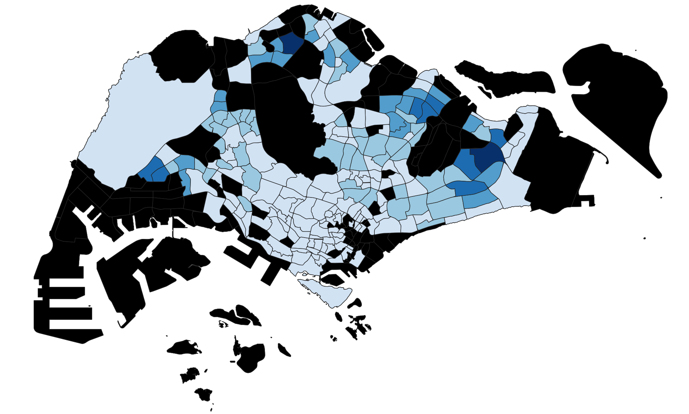
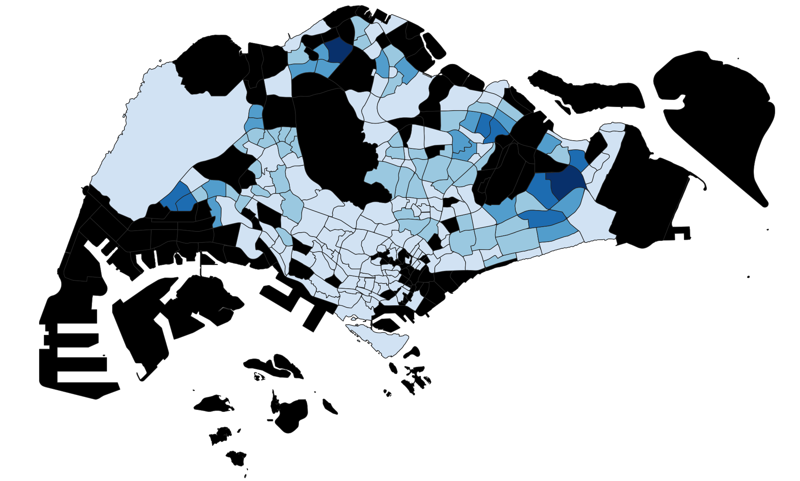
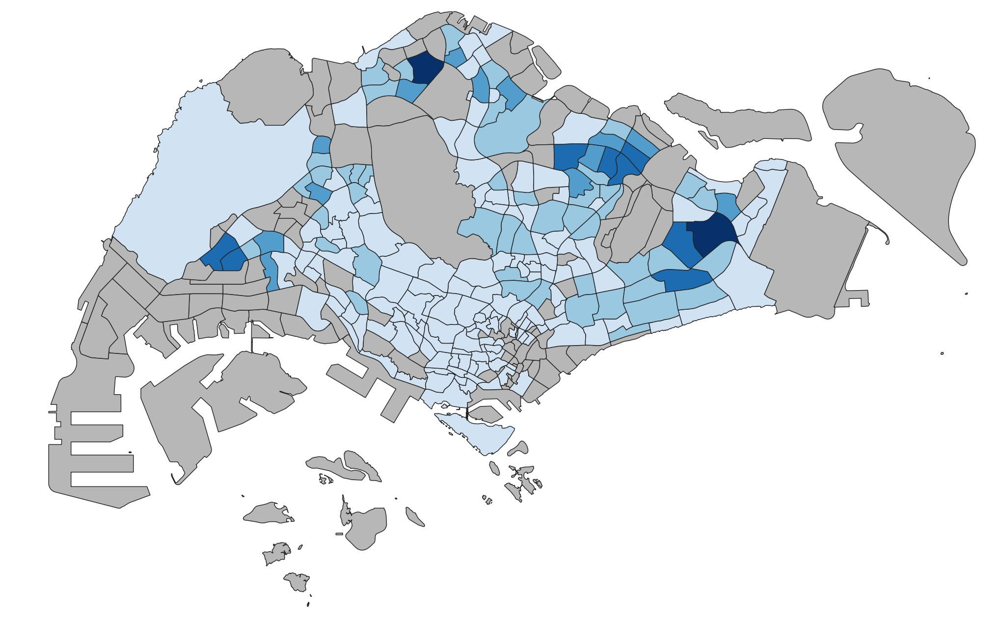

Maps
The following maps are the chloropleth maps our team generated for the five years we considered. The in-depth analysis of these maps can be found in the ‘Report’ tab.
Singapore’s young population in 2014
For the distribution of young people in 2014, we found that Tampines East and Woodlands East have the highest number of young people with 13975 and 17640 respectively. We also observe that the extreme West, East and North areas of Singapore are the most highly populated with young people while there are not many young people living in the Southern area of Singapore.
Singapore’s young population in 2015

In 2015, we observed that Tampines East and Woodlands East continue to be the areas with the highest number of young people in the area. Punggol has the biggest increase in young people of 3150 compared to 2014 while Teck Whye, Peng Siang and Yishun South all faced a decrease in young population compared to 2014.
Singapore’s young population in 2017

In 2017, Punggol Field, Anchorvale and Kaki Bukit all saw an increase in young people while the other areas did not see much changes. Overall, not much significant changes were observed in the young population living around Singapore and we still observe the trend of many young people in Singapore living in the extreme West, East and North regions.
Singapore’s young population in 2019

In 2019, Fernvale and Seletar saw an increase in the number of young people while other areas did not see much changes. However, this change was not very significant and the distribution of young across Singapore is similar to that of 2017.
In 2017, there was no change in the number of primary schools and pre-tertiary institutions, while there were 6 pairs of secondary schools that merged. The lack of change in distribution of young people after this merger took place implies that prospective secondary school students are not greatly affected by the decrease in accessibility.
Singapore’s young population in 2020

In 2020, there was an increase in the number of young people in Keat Hong, while there was a decrease in Hillview, Yuhua East and Pasir Ris West. Other than that, there is no significant observable change in the distribution of young based on the choropleth maps. There may be changes that are not captured visually as the new numbers may still fall within the same band. As such, our group decided to calculate the difference in the number of young people between selected years.